You can open any projects in the Paper Toy tool by entering the main menu with escape, clicking "Load":
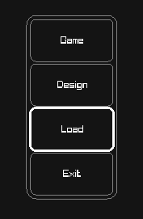
and pasting the path to your project from the clipboard by pressing the "Paste from clipboard" button.
Then Selecting the game file, and hitting the load button
Paperlang is a programming language for card games.
The two basic concepts in Paperlang are Cards and Stacks. Cards & Stacks may both contain attributes. Stacks contain some builtin attributes that hold important state, like size for the size, top for the top card, bottom for the bottom card.
card MyFirstCard start
int h = 0
end
MyFirstCard.h ; access 'h'
visiblestack hand
place MyFirstCard -> hand 1
hand.size == 1 ; hand contains 1 card, so it's size is 1
hand.top == MyFirstCard ; the top card in a is 'MyFirstCard'
hand.bottom == B ; the bottom card in a is also 'MyFirstCard'
card MySecondCard start
int h
end
place MySecondCard -> hand 1
hand.size == 2 ; a now contains 2 cards
hand.top-1 == MyFirstCard ; the second from top is still MyFirstCard
hand.top == MySecondCard ;the top card is now MySecondCard
int hand.customVariable ; stacks can have attributes assigned to them
hand.customVariable = 5 ; and assigned to
There are two kinds of stacks, visible and hidden:
game Example start
card A start end
visiblestack a
hiddenstack b
place A -> a 5
place A -> b 5
setup start
end
turn start
end
end
Here a is visible (faceup), and b is hidden (facedown)
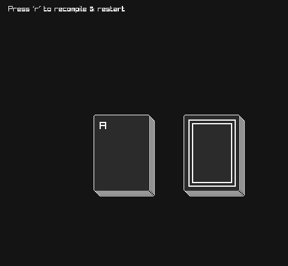
You can chage how the stacks & cards are displayed using the design tool. You can access the design tool from the escape menu
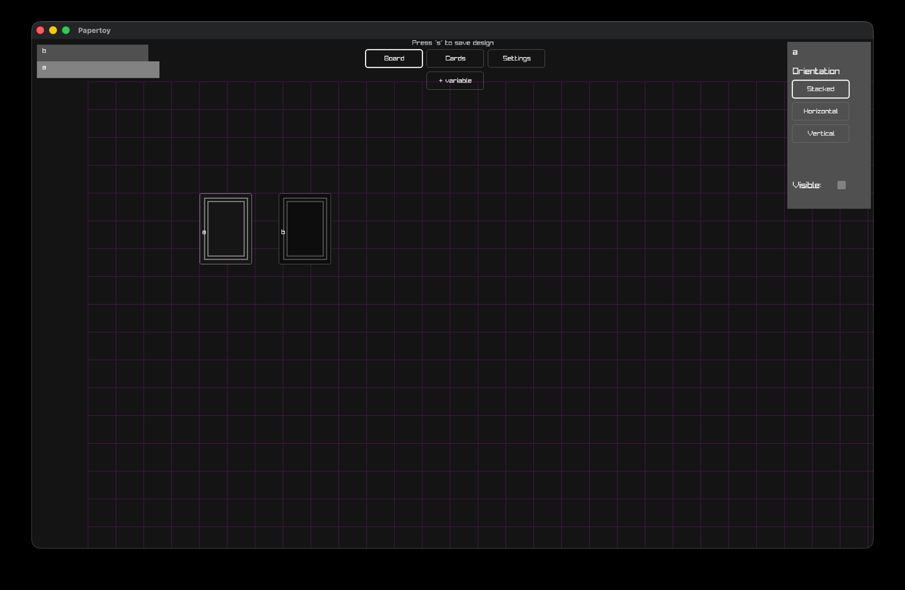
Lets see what happens when we change the orientation of stack b to 'Horizontal'...
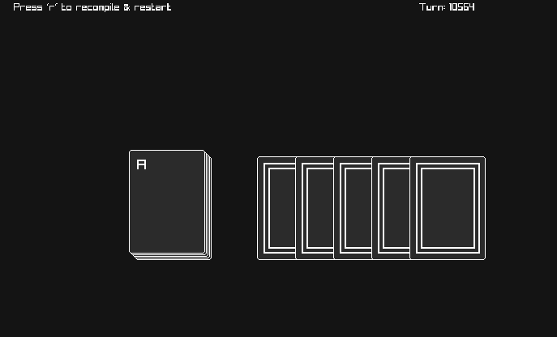
You can also assign sprites to cards from here. Sprite paths are relative to the game code directory.
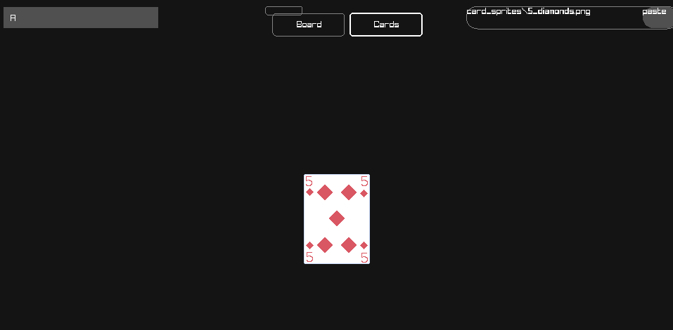
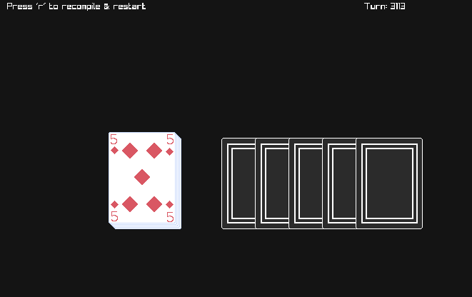
game EmptyGame start
setup start
end
turn start
end
end
Notice the setup and turn blocks denoted buy the start and end tags.
Any code in the setup block will run at the start of the game. And any code in the turn block will run every turn.
You can place code outside of the setup block, and that will get run before the game starts. However, anything that happens in the setup block will be fully animated and visible to the player.
For example, when dealing out cards, maybe you want the player to see the cards being dealt out one by one, instead of starting the game with a full hand. Then you would put the dealing code inside the setup start ... end block
If you load this example into PaperToy, you will notice that the turn counter goes up automatically, this is because nothing inside the turn block is asking the user for any input. If no user input is nessecary, a turn will proceed automatically.
This game is empty, so we end up with an empty screen
As in most programming languages, paperlang has variables. There are different types of variables. Right now only integer numbers (whole numbers) and booleans (true or false) are available. Strings (text) are planned for a future update. floats (decimal numbers like 1.25) will added if there is demand for it.
variables are declared like so:
game mygame start
int i
i = 5
int j = 4
...
turn start
bool weWon = false
end
...
end
As you can see, you can declare and assign attributes in the same line, or on different lines. Variables declared inside blocks are not visible to code outside of that block, but variables declared outside a block are visible to code inside that block. For instance in the above example i & j can both be accessed from the turn block, but weWon cannot be accessed outside the turn block.
Small technical detail (for interest only): the following two peices of code compile to exactly the same bytecode:
int i
i = 5
int i = 5
Stacks can have their own variables:
visiblestack spells start
bool forSpells = true
end
visiblestack monsters start
bool forMonsters = true
end
The first thing we should cover here is how to make a card. Cards are declared like so:
card Monster start
int defence
int attack
end
This delcares a Monster card. But what if we want multiple types of monsters? And what if we want to easily fill a stack of cards with random monsters? Well that's where 'parent' cards come in.
card Monster start
int defence
int attack
end
card Goblin Monster start
defense=5
attack=5
end
card Hobold Monster start
defense=10
attack=2
end
card Elf Monster start
defense=2
attack=8
end
Here we create three different kinds of Monster: Goblin Hobold Elf each with different defense and attack stats.
You can change an attribute for one individual card:
monsterStack.top.defense = 0
But how would we fill a stack with random Monster cards? Like this:
hiddenstack monsters
random Monster -> monsters 100
When looking through the example code, you will often see this a line like this:
#use "deck"
if you have a look in the same folder as the code file with this line, you will find a file called deck, if you open this file up in an editor like notepad, you will see a bunch of playing card declarations, and commands filling a hiddenstack named 'deck'.
...
card aceH number start v = 1 suit = 1 end
card twoH number start v = 2 suit = 1 end
card threeH number start v = 3 suit = 1 end
...
hiddenstack deck
place aceH -> deck 1
place aceD -> deck 1
place aceC -> deck 1
...
The deck stack represents a standard deck of 52 playing cards. These are already defined for you (along with their sprites), so there's no need to make them yourself. All you have to do is make sure the deck file (and the matching design.txt file, we'll cover this later) is next to your game file, and you're ready to use the standard deck of playing cards.
The next thing we want to cover are move commands. The syntax is:
SOURCE_STACK -> DESTINATION_STACK top/bottom NUMBER_TO_MOVE
SOURCE_STACK /> DESTINATION_STACK top/bottom NUMBER_TO_CUT
A move -> moves cards from one stack to the other, one at a time. So if you are moving from the top of one stack to the top of another, the order of the cards will be reversed.
A cut /> moves multiple cards at the same time from one stack to the other, preserving order.
This line means, move NUMBER_TO_MOVE cards from either the top or bottom of SOURCE_STACK to the top of DESTINATION_STACK.
If you want to move a card to the bottom of DESTINATION_STACK, you can replace the '->' (move over) with an '->_' (move under)
random Monster -> a 20 means "Create twenty random cards of type 'Monster' and place them on the top of the 'a' stack"
To place create specific cards and place them into a dack, you can use the place keyword
place Goblin -> a 5
The above code creates 5 Goblin cards and places them on the top of stack a
This feature can be quite useful when a player needs to choose a card from their hand to play.
You can also let the player decide which cards specifically to move with choose SOURCE_STACK -> DESTINATION_STACK NUMBER_TO_MOVE
...
random Monster -> a 3
random Monster -> b 3
setup start
end
turn start
pickone start
pick choose a -> c 1 then
pick choose b -> c 1 then
end
end
...
if you replace lines 21 to 33 in cards&stack.txt with this code snippet, each time you choose a stack to move a card from, the game will let you choose which card from that stack is moved. If that stack is a visiblestack the front of the cards will be visible, else they will be hidden:
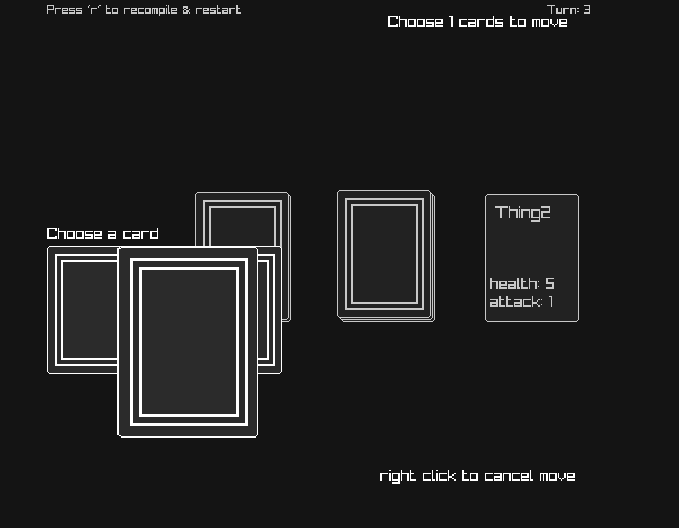
There's a much simpler way to express this part:
pickone start
pick choose a -> c 1 then
pick choose b -> c 1 then
end
and that's like this:
choose a,b -> c 1
If you specify multiple source or destination stacks like this, the user will get to choose between those options. The 'choose' keyword at the start of the line here makes it so that once the user has selected a source stack, they will need to select which card to move too.
a,b,c -> e,f,g top 1
This means: "Move the top card from either of stacks a, b or c TO either of stacks e, f or g."
there's another way to specify multiple stacks in a stack move, and that's with stacklists. These let you do powerful things like positional queries & indexing. These will be covered in a later section.
You may ask then, what is the difference between a pick block pickone start ... end block and just specifying multiple stacks seperated by a comma a,b -> c,d ?
The answer is effects. Say you wanted to let the user choose a deck to move a card from, but then you wanted something to happen based on their choice. You could use a pickone ... block to acheive this:
Imagine a game of blackjack (in fact you don't have to imagine very hard, as a full blackjack implementation is included as an example project. examples/blackjack)
Here, we implement hit and stick "buttons" using two different stacks. When the user 'chooses' either stack, we send the top card, to the top of the same stack (essentially moving nothing), but then depending on the users choice, we either deal more cards to the dealer & player, or we end the game.
card Hit start end
card Stick start end
visiblestack hitbutton
visiblestack stickbutton
place Hit -> hitbutton 1
place Stick -> stickbutton 1
...
pickone start
pick hitbutton -> hitbutton top 1 then
deck -> hand top 1
deck -> dealerHidden top 1
pick stickbutton -> stickbutton top 1 then
; calculate the winner
...
end
; check if we've lost ...
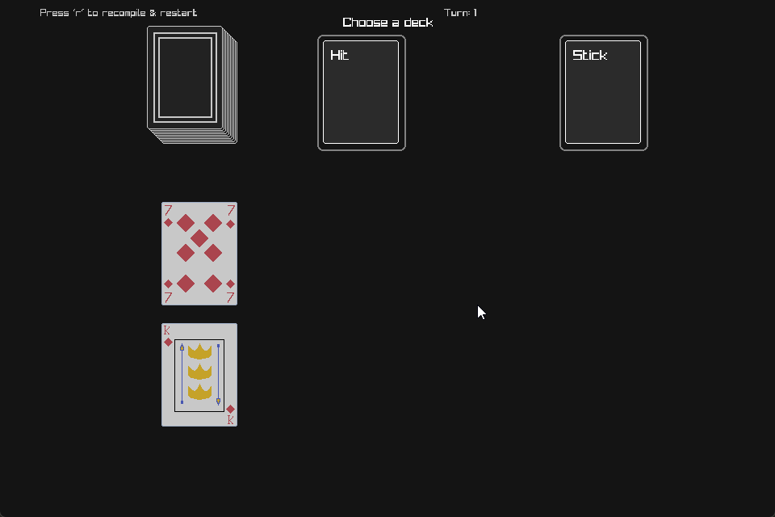
The dealers hand is mostly hidden to the player, apart from their first card. The players hand is visible at the bottom. If the player chooses to stick, the dealers hand is revealed. If the players score exceeds 21, then the player automatically looses. If you're interested in looking at the code, it's available in the example blackjack project docs/examples/blackjack
an if/elseif/else structure exists in paperlang. Leaning on the blackjack example project again:
if dealerScore > 21 start
winneris currentPlayer
elseif (21 - playerScore) < (21 - dealerScore) then
winneris currentPlayer
else
looseris currentPlayer
end
It is possible to define a list of stacks, this is usefull where you have multiple stacks that need to interact with eachother in a positional way. EG in the solitaire game Accordion
For an example of stacklist use, please see the Accordion Worked Example Project
stacklist list[5]
place CardA -> list[0] 1
place CardA -> list[1] 1
place CardA -> list[2] 1
place CardA -> list[3] 1
place CardA -> list[4] 1
list -> list[:-1] top all
The above code defines a list of 5 stacks, places a card on each stack, and then asks the player to move all the cards from any stack to the stack directly preceding it.
In the Accordion game, the player can choose to move a card 1 to the left, or three to the left, so the move command looks like this:
list -> list[:-1:-3] top all
Meaning -1, or -3. Relative [:N] indexing is always relative to the source deck, so the following code does not make sense and will not run:
list[:1] -> list[-1] top 1
You can make every stack in a stacklist to have the same variables:
stacklist list[5] start
int x = 0
end
; (list[0]).x == 0
; (list[1]).x == 0
; (list[2]).x == 0
; (list[3]).x == 0
; (list[4]).x == 0
You can also directly specify stacks in a list by index:
list[4] -> list[0] top 1
Move the top card from the 5th stack in the list, to the first stack in the list (indexing begins at zero)
In situations where you are moving either to or from multiple stacks, you may want to filter available choices by certain criteria. We use as an example, the Accordion Solitaire implementation.
row /> row[:-1:-3] top all where from{from.size > 0}, to{(from.top.v == to.top.v) || (from.top.suit == to.top.suit)}
In Accordion solitaire, you may only move a card to a stack where the top card on that stack matches the card you want to move, either in value, or in suit. We define that rule as a move filter:
where from{from.size > 0}
the stack you're moving from, must contain at least one card
, to{(from.top.v == to.top.v) || (from.top.suit == to.top.suit)}
the top card of the stack you're moving to must match the top card of the source deck either in suit, or value (v)
the two filters must be seperated by a ',' comma, and must follow the where keyword
You can test whether a stack contains a certain sequence of cards, in order. You can use an equality test against a stack and a sequence matcher [...].
if a == [A B C D] start
...
Within the square branckets you specify a sequence of cards by name. You can also match any card once: '_', and match any number (including 0) of cards with ':'. Please see the following examples:
"Does stack contain cards A B C and D in that order. And no other cards?"
a == [A B C D]
"Does stack contain cards A B C and D in that order at the top of the deck? Any or no cards may follow after D"
a == [A B C D :]
"The top card may be any card, then the sequence in the deck must be B, C & D"
a == [_ B C D]
"Does a contain C anywhere in the stack?"
a == [: C :]
"Does stack a start with A on top, then contain the sequence B, anycard, D anywhere in the deck, and then end with another D card?"
a == [A : B _ D : D]
You can use ordered sequence matchers to select stacks that you can move from & to:
a{[A A A A]} -> b top all means, ask the user to select a stack matching the sequence [A A A A] from the list to move from:
card A start end
card B start end
stacklist a[2]
visiblestack b
place B -> a[0] 4
place A -> a[1] 4
a{[A A A A]} -> b top all
You can see that only the second stack here is selectable:
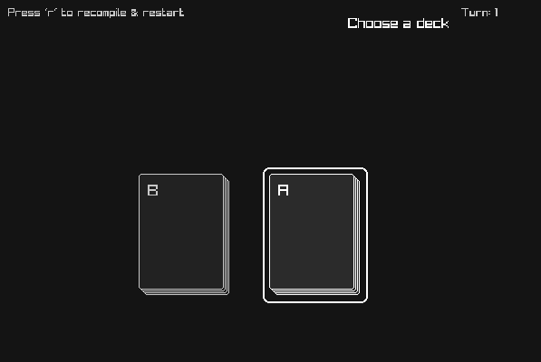
You can also pick the first/last stack that matches the sequence:
card A start end
stacklist a[2]
visiblestack b
place A -> a[0] 4
place A -> a[1] 4
a{|[A A A A]} -> b top all
To select the last stack in the sequence, simply put the '|' after the sequence: a{[A A A A]|} -> b top all.
Here you can see that even though both stacks match the sequence, only the first stack is selectable.
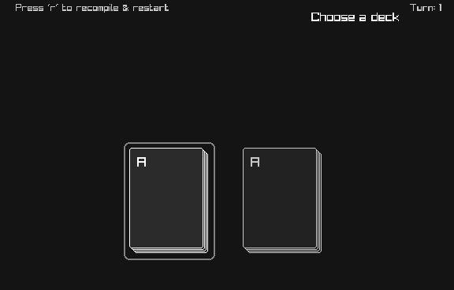
You can also specify destination stacks:
card A start end
card B start end
stacklist a[2]
stacklist b[2]
place A -> a[0] 4
place B -> a[1] 4
place B -> b[0] 4
place A -> b[1] 4
a{[A A A A]} -> b{[A A A A]} top all
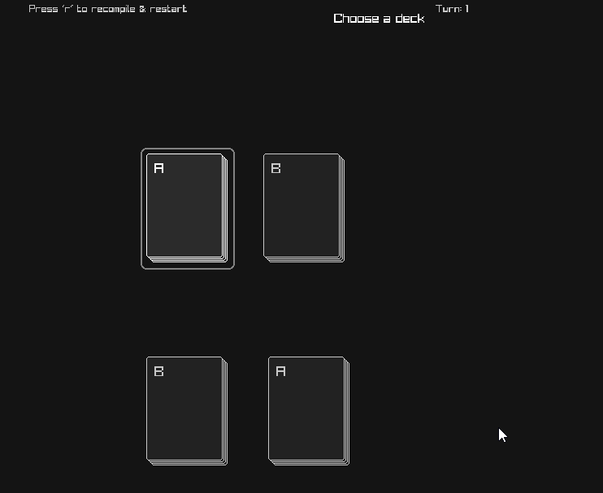
You can move all of one kind of card: a{C} -> b top all
game EmptyGame start
card A start end
card B start end
card C start end
card D start end
card E start end
visiblestack a
place A -> a 5
place B -> a 5
place C -> a 5
place D -> a 5
place E -> a 5
shuffle a
visiblestack b
setup start
end
turn start
a{C} -> b top all
end
end
Move all C cards from a to b
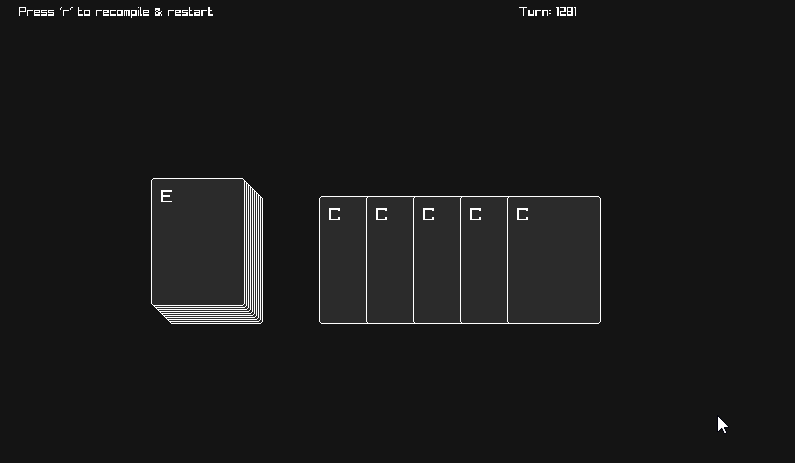
The expression a{C} actually counts as a 'logical stack' so you can do things like this:
; if there are 5 C's in a, move them all into b
if (a{C}).size == 5 start
a{C} -> b top all
end
You can also put logical expressions inside braces: a{x > 5}
...
card A start
int x = 5
end
card B start
int x = 2
end
...
a{x > 4} -> b top all
Here we move cards who's x attribute is greater than 4 to the b stack
In blackjack, it's important to keep track of the total score of cards in play. You can do this by summing over attributes of cards in a stack. The following code uses the prebuilt 52 card deck. hand{v} means sum all of v attributes of the cards in hand. In our blackjack game, we assign that to our playerScore variable so that we can track it. Cards in the premade deck have two attributes, v for value, and suit for suit.
#use "deck"
visiblestack hand
int playerScore
...
playerScore = hand{v}
Sometimes it's usefull to detect sequences of cards in stacks that may be unoredered. Consider the game rummy, where you need to have sequences of cards EG [A 2 3] [9 10 j] in your hand, your hand may not be sorted, and whats's more, you don't want to explicitally write down every possible legal three sequence. This is where Orderless Sequence Matches come in.
Sequences construct 'logical' stacks. You can treat these stacks just like ordinary stacks, you can check their size, move from them and match them against sequences like [: A 2 3 :].
The syntax is (STACKNAME { sq N A EXPRESSION }) where STACKNAME is the name of your stack, N is the expected size of the sequence, A is the attribute you want the stack to be sorted by during the search, and EXPRESSION is the expression to test previously matched card in the sequence against the next one.
In the expression, the last matched card and next card to test are bound to l and n respecitively. When the search is executed, the stack will be sorted by the attribute A, and every possible sequence matching your search will be tested for.
At the moment, only sorting in ascending order is supported.
In the following example, 5 cards are dealt into the players hand, and if any continuous sequence of 3 cards is detected, the player wins. hand{sq 3 v (l.v+1) == n.v}) We sort the stack hand by the attribute v, then we only match cards where the next card's v value is one greater than the last.
The resulting logical stack will contain 3 cards if a matching sequence has been found, otherwise it will be empty.
game OrderlessSequences start
#use "deck"
visiblestack hand
shuffle deck
setup start
deck -> hand top 5
end
turn start
if (hand{sq 3 v (l.v+1) == n.v}).size == 3 start
winneris currentPlayer
end
...
end
end
If the player wins, lets move the winning sequence from the hand to a done stack
if (hand{sq 3 v (l.v+1) == n.v}).size == 3 start
hand{sq 3 v (l.v+1) == n.v} -> done top all
winneris currentPlayer
end
Stacks can be shuffled:
shuffle a
"shuffle stack a"
Many collectable card games have mechanics where individual cards has special rules that play out when they enter or exit certain stacks. In Paperlang, you can use onmoved and premove hooks to run a bit of code every time a specific card has just been moved, or is just about to be moved.
inside the onmoved and premove hooks, to references the stack the card moved in to, and references the stack the card just moved out of. this references the card being moved.
...
visiblestack graveyard
visiblestack play
card Necromancer start end
onmoved Necromancer start
if to == graveyard start
; raise the dead!
graveyard -> play top all
end
end
...
When the Necromancer enters the graveyard, everything in the graveyard gets moved into the play stack
But this code will also bring the Necromancer back from the graveyard. Maybe we want to move all the cards from the graveyard just before the necromancer gets there, so the necromancer will still end up in the graveyard?
For that, we can use a premove hook
...
visiblestack graveyard
visiblestack play
card Necromancer start end
premove Necromancer start
if to == graveyard start
; raise the dead! Just before the Necromancer gets there ...
graveyard -> play top all
end
end
...
The current player wins
winneris currentPlayer
The current player loses
looseris currentPlayer
sometimes, it's useful to define some behaviour once, and then run it from somewhere else. This could be because it needs to run in multiple locations, or it could just be to neeten up your code.
Syntax: do PHASE_NAME
...
phase refreshHand start
deck -> hand top 1
end
...
turn start
do refreshHand
...
end
...
Here, we delcare a phase called refreshHand, which adds a card to our hand from the deck We run it at the start of every turn
Sometimes, it's nessecary to repeat an action multiple times while something is true. If you have some experience with programing this idea shouldn't be new to you. It works in exactly the same way as in many other programing languages.
i = 0
while i < 5 start
deck -> hand top 1
i = i + 1
end
This will place 5 cards into the hand stack.
WARNING Infinite loops will cause the game to hang and become unresponsive.